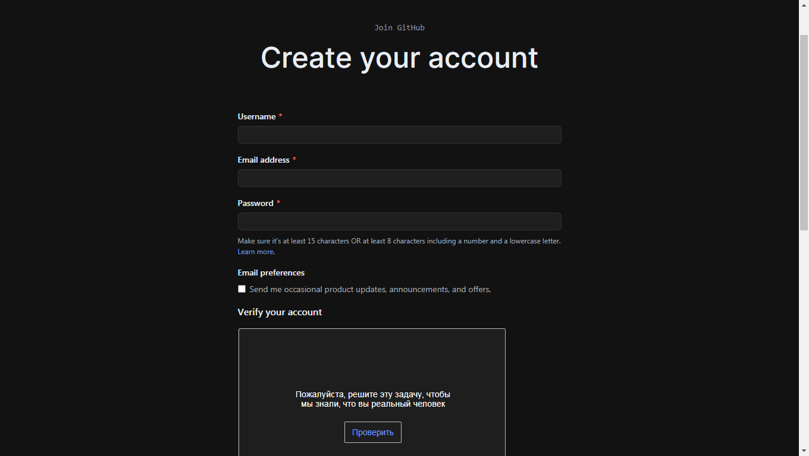
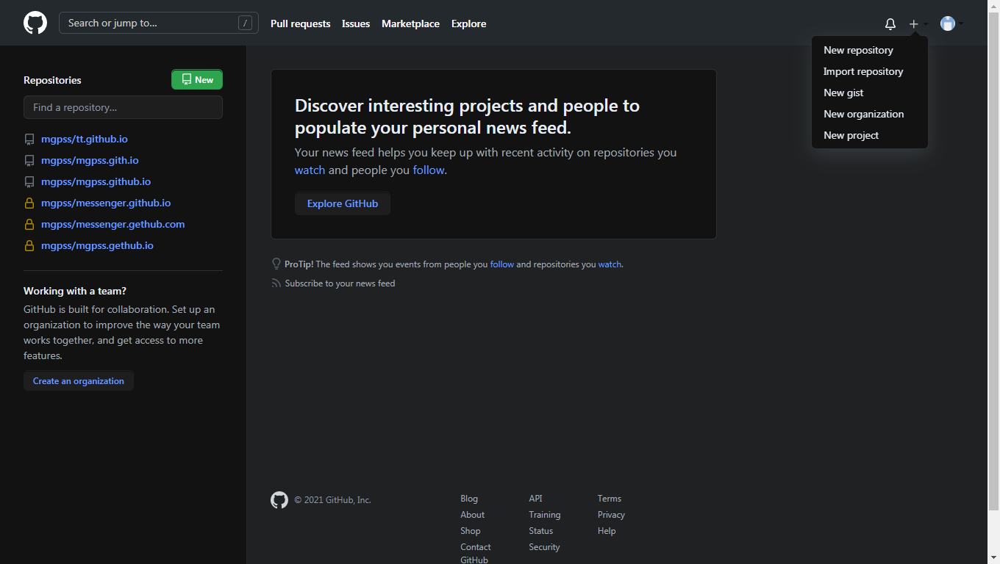
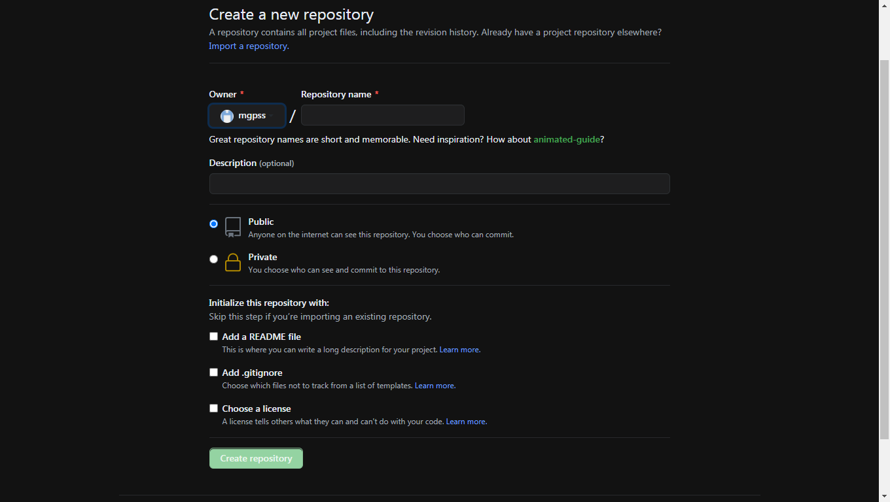
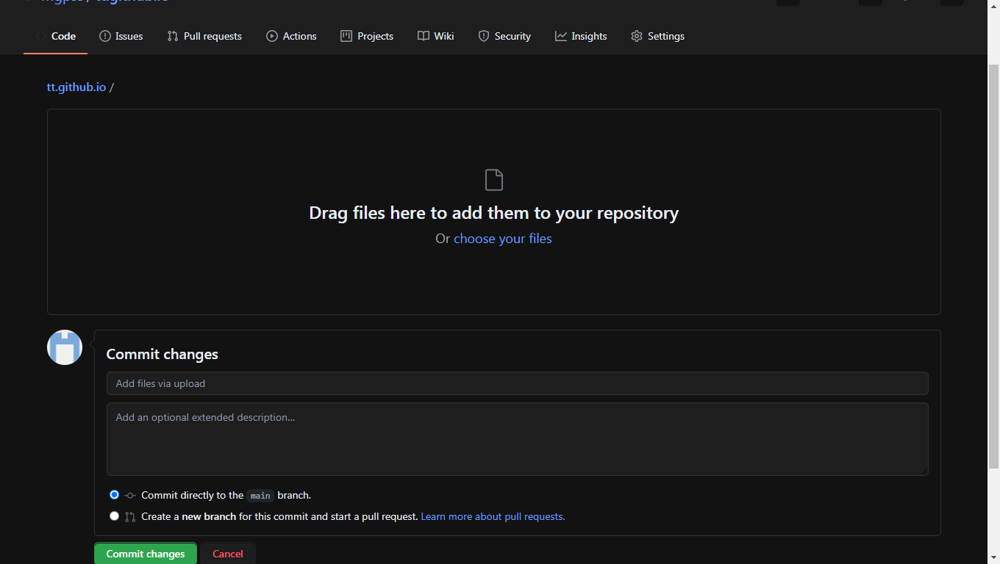

Эта статья о том как очень быстро запустить свой сайт.Сервис Github предоставляет вам свои возможности свой хостинг,свой домен бесплатно! В наше время сайты играют значительную роль в нашей жизни.Они развлекают, обучают.Это хороший способ донести до людей какую-либо информацию. Итак приступим!
Шаг 1
Регистрация на Github занимает неотьемлемую часть постановки сайта. При регистрации в поле "username" введите имя которое будет использоватся в качестве названия для хостинга.Далее вводите свою почту, придумайте пароль и пройдите капчу.Подтвердите почту. Учетная запись создана!
Шаг 2
Далее мы создаем так называемый репозиторий в котором и будет хранится наш сайт.
В блоке «Your repositories» нажимаем кнопку «New repository».Открывается окно создания. Теперь нужно заполнить параметры.В поле "Repository name" пишем свой username и дописываем к нему ".github.io" это и будет нашей будущей ссылкой. Строка "Description" заполняется по желанию.Далее ставим отметку "Public" и "Create Readme". Подтверждаем создание. Репозиторий создан!
Шаг 3
Репозиторий создан и можно приступить к настройке содержимого сайта для этого всего лишь нужно вгрузить файл гиперразметки и другие дополнительные файлы.Нажимаем на кнопку "Add file" и перетаскиваем нужные файлы в окно браузера или приложения.Нажимаем кнопку "Commit changes".
Шаг 4
Готово!!!Сайт создан.Чтобы попасть на сайт нужно просто вбить в поисковую строку браузера "https://username.github.io/". Наслаждаемся...